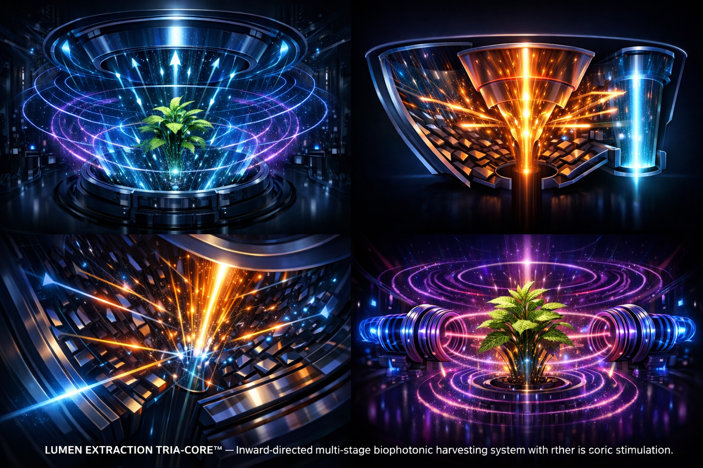
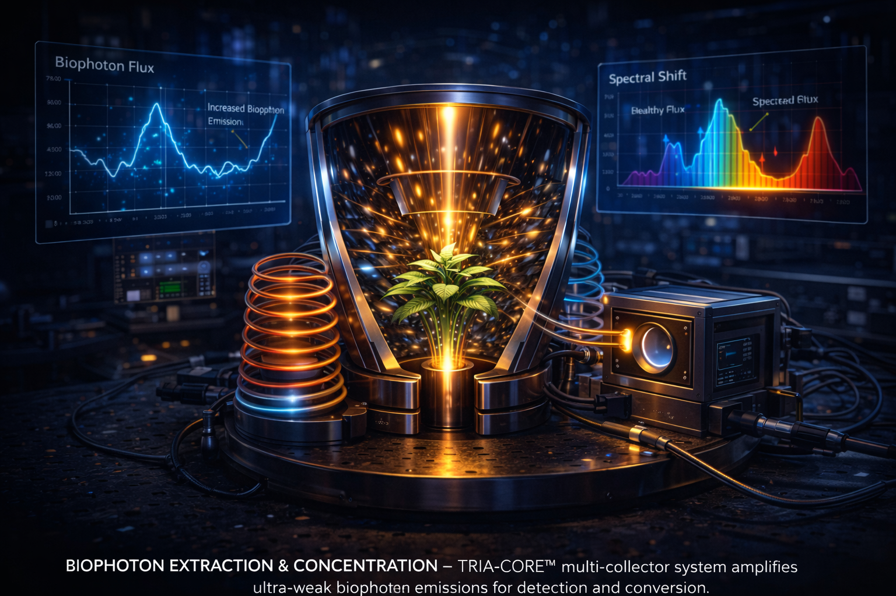
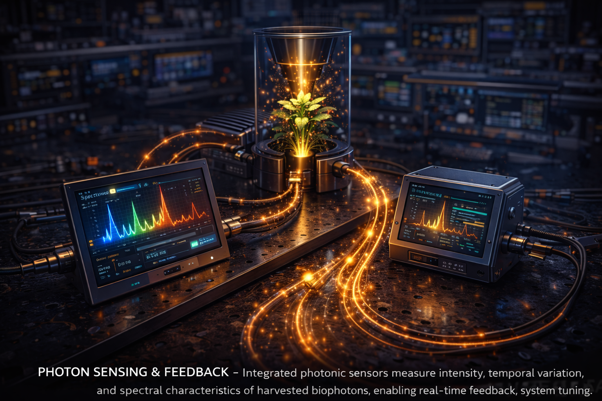
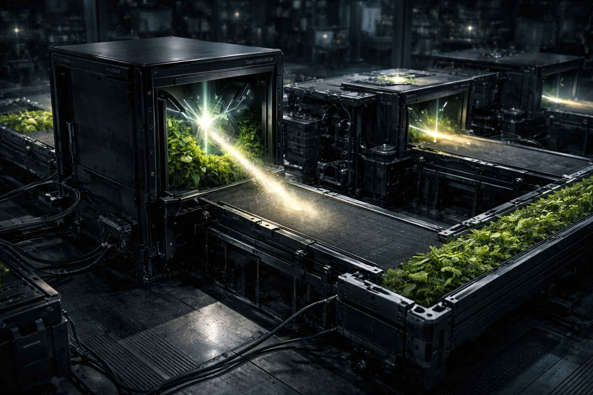

Biological Photon Sensing
A proposed direction for investigating faint biological light emissions.
Optical ResearchHaloCyberLife · Biophotonic Research
TRIA-CORE™ is a speculative research concept exploring the detection and interpretation of ultraweak light emitted by biological systems.
Independent Concept Research · Not Validated


01 · Scientific Foundation
Living biological material can emit extremely small amounts of light through processes associated with oxidative chemical reactions. This phenomenon is commonly described as ultraweak photon emission, or UPE.
These emissions are generally far below ordinary visual detection thresholds. Researchers use specialized low-light instruments to investigate them.
BioLumen™ explores whether future optical sensing systems could use such observations as one source of information about biological activity.
Detecting photons is not the same as harvesting useful electrical power from them. Ultraweak biological emissions have very low photon flux. Their potential as a practical energy source is unproven.
BioLumen's proposed energy-conversion applications therefore remain speculative. No net energy production, extraction efficiency, or operational performance is claimed.
02 · Research Questions
Some biochemical reactions, including reactions involving reactive oxygen species, can produce electronically excited molecules. When certain excited states relax, photons may be emitted.
The intensity and characteristics of ultraweak emission can vary with biological material, environmental conditions, metabolic processes, and measurement methods.
Because the signal is extremely faint, measurements must be interpreted carefully. Ambient light, detector noise, sample preparation, and experimental controls can affect the results.
Low-light detection requires instrumentation capable of distinguishing rare photon events from background noise.
Relevant challenges include sensor sensitivity, dark counts, optical losses, calibration, environmental interference, and repeatability.
A useful measurement system would need to show that detected signals genuinely originate from the sample rather than the equipment or surrounding environment.
BioLumen considers the possibility that optical observations could eventually complement other forms of biological measurement.
Establishing a reliable relationship between photon emission and a biological condition would require controlled experiments, comparison with established measurements, and independent validation.
A photon signal alone should not be interpreted as a definitive measure of health, vitality, or cellular condition.

03 · Concept Gallery
The following illustrations explore possible directions for optical sensing, low-light measurement, and future biological research interfaces.
These images are concept art. They do not establish that the illustrated devices have been built, tested, or validated.
A proposed direction for investigating faint biological light emissions.
Optical Research
Exploring whether low-light optical observations could be collected and characterized reliably.
Concept Research
Considering the relationship between photon detection, measurement electronics, and signal interpretation.
Signal Detection
Exploring how repeatable measurements and environmental controls could improve experimental interpretation.
Measurement SystemsA visual exploration of the BioLumen idea. Illustrative content is not experimental evidence or proof of energy recovery.

Imagining how optical sensing concepts might inform future laboratory research tools.
Future Applications04 · Scientific Limitations
BioLumen remains an independent speculative research concept. Several fundamental questions would need to be answered before practical claims could be supported.
No validated prototype performance, clinical diagnostic capability, net energy generation, or commercially available BioLumen product is claimed here.
The TRIA-CORE™ name identifies HaloCyberLife's proposed research concept, not an independently established scientific instrument category.
05 · Proposed Research Path
Examine published research on ultraweak photon emission, low-light instrumentation, biological oxidation, and experimental controls.
Define the measurable quantities, appropriate control conditions, calibration requirements, and criteria for interpreting results.
If suitable resources become available, investigate limited non-clinical experiments with appropriate instrumentation and documentation.
Evaluate whether reproducible results justify additional research or more specialized development.
Support Independent Research
HaloCyberLife explores original ideas at the intersection of biological systems, sensing technology, and speculative engineering.
Contributions can help support continued concept development, research preparation, and related project expenses.
Literature review, documentation, and feasibility analysis.
Exploring appropriate measurement methods and testing requirements.
Supporting continued independent research activity.
Payment processing through Stripe. Contributions do not represent an investment or a guarantee of technical results.